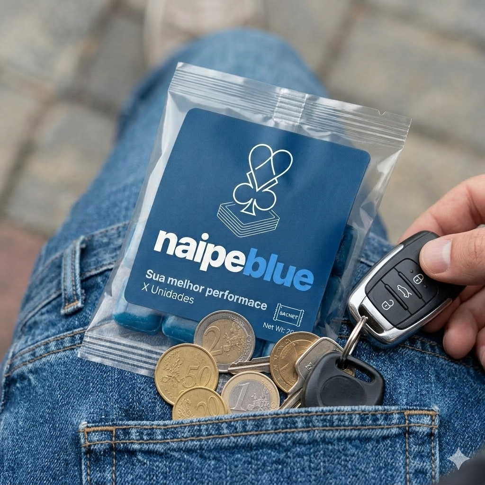
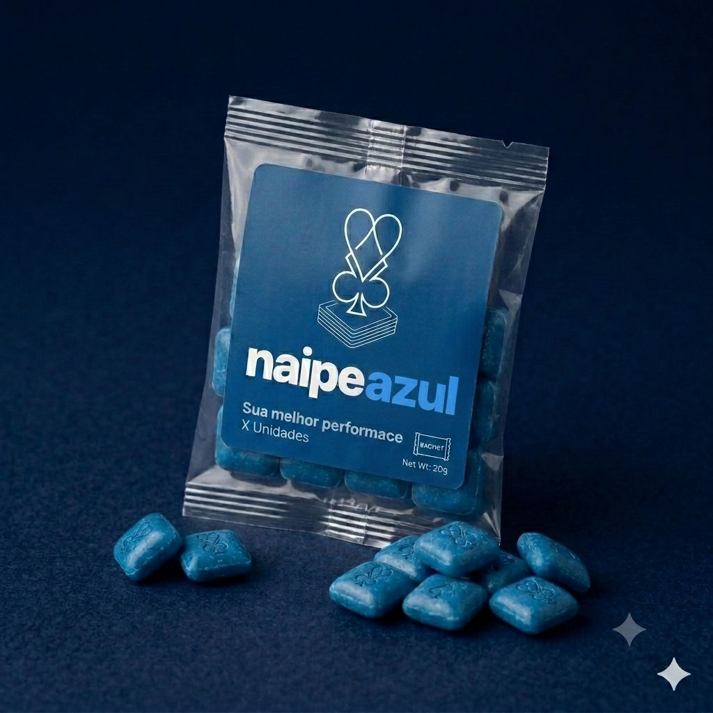

O que você quer melhorar na sua vida sexual?

Como está sua performance hoje?
Quando você quer começar a sentir a diferença?
Veja como é simples
Ao continuar você está de acordo com o Termo de Consentimento para tratamento de dados pessoais da Naipe Azul, inclusive dados sensíveis relativos à saúde.
dos homens que usam Naipe Azul dizem se sentir mais confiantes na hora H.

Qual a sua faixa etária?
Isso nos ajuda a personalizar sua recomendação.
Qual é o seu peso atual?
← Arraste para ajustar →
Qual a sua principal preocupação?
Selecione a que mais se aplica a você.
Já identificamos isso com base na sua resposta anterior — pode confirmar ou escolher outra.
Com que frequência isso acontece?
Você está acima do peso (obeso/sobrepeso)?
Você faz uso de algum medicamento atualmente?
Já passou por alguma cirurgia?
A sua cirurgia foi no coração?
Você usa algum medicamento à base de nitrato?
Ex.: Sustrate, Isordil, Monocordil, Imdur, Nitroderm, Nitromint.
Você já teve alguma dessas condições?
Sua pressão costuma ficar acima de 16 por 9 (160/90 mmHg)?
Você teve AVC há menos de 3 anos?
Você teve Infarto há menos de 3 anos?
Com que frequência você pretende ter relações com melhor desempenho?
Isso nos ajuda a definir a quantidade ideal pra você.
Vamos parar por aqui?
← Voltar ao site
Esta avaliação é apenas informativa e não substitui consulta médica. Procure um profissional de saúde para uma avaliação completa.
Seu plano está pronto.
Com base nas suas respostas, montamos um protocolo personalizado. O médico parceiro fará a análise final antes de emitir a prescrição.
🎯 Ver meu plano← Voltar ao site
As respostas deste questionário não substituem avaliação médica completa. Nosso médico parceiro fará a análise final antes de emitir a prescrição.